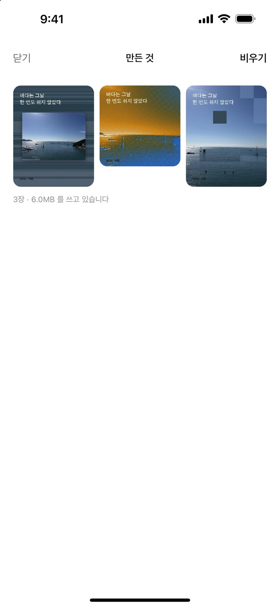

하는 일
- 사진을 먼저 읽습니다어울리는 결을 점수와 이유로 권합니다.
- 결 셋격자 어긋내기, 색 줄무늬, 리소 2색.
- 다시 뽑기같은 결이라도 배치가 매번 다릅니다.
- 글자는 자유 레이어판 아무 데나 눌러 넣고 끌어 옮깁니다. 셋까지.
- 판 셋게시물 1080 × 1350, 정사각 1080 × 1080, 스토리 1080 × 1920.
- 만든 것이 쌓입니다내보낸 포스터는 앱 안에 남아 다시 꺼내 쓸 수 있습니다.



약속
- 계정이 없습니다가입도 로그인도 없습니다.
- 기기 안에서 끝납니다서버도 클라우드도 없습니다. 인터넷에 접속하지 않습니다.
- 보관함을 읽지 않습니다시스템 사진 선택기로 고른 한 장만 받습니다.
- 원본 사진은 안 남깁니다앱에 쌓이는 것은 내보낸 포스터뿐입니다.
- 재촉하지 않습니다알림, 배지, 구독 화면이 없습니다.
자주 묻는 것
- 권한을 왜 안 묻나요?
- 사진은 iPhone 의 시스템 선택기로 고른 한 장만 들어옵니다. 앱이 보관함을 열어 볼 일이 없습니다.
- 저장할 때만 묻는 권한은 무엇인가요?
- 사진 앱에 넣는 권한(추가 전용)입니다. 사진 앱을 읽지는 않습니다.
- 만든 포스터는 어디에 있나요?
- 사진 앱과 앱 안 「만든 것」 양쪽에 있습니다. 「만든 것」에서 한 장씩 지우거나 전부 비울 수 있습니다.
- 같은 사진으로 다시 만들 수 있나요?
- 됩니다. 「만든 값 기억하기」를 켜면 다음 사진도 같은 결, 같은 손잡이로 시작합니다.
- 필터나 보정은 없나요?
- 없습니다. 포스터를 만드는 앱입니다.
연락
안 되는 것, 바라는 것을 보내 주세요.
hanmari.code@gmail.com